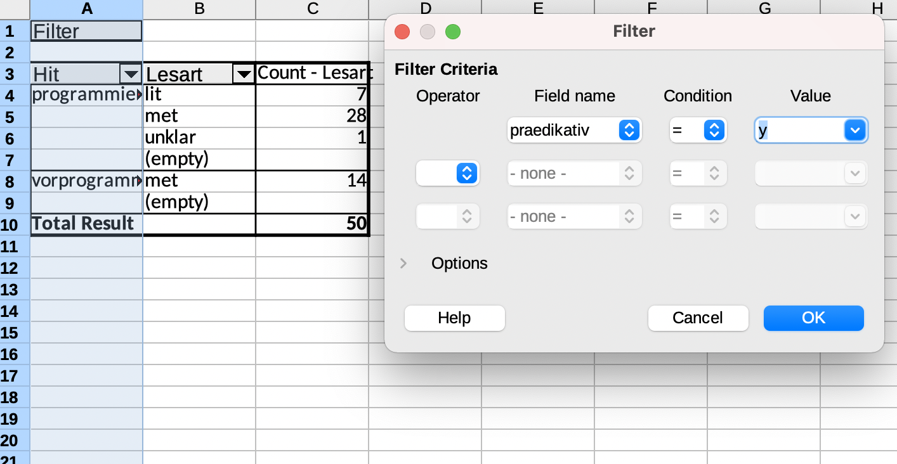

Datenvisualisierung mit Calc
Einfache Balkendiagramme
Als Beispiel nutzen wir die Daten zur Konkurrenz von programmiert und vorprogrammiert aus dem DWDS (siehe Tutorial zur Korpuslinguistik). Es handelt sich um einen kleinen Datensatz mit Belegen für programmiert und vorprogrammiert, die daraufhin annotiert wurden, a) ob das Partizip attributiv oder prädikativ gebraucht wird (der programmierte Computer vs. der Computer ist programmiert), b) ob es sich auf das Objekt des Programmiervorgangs bezieht (die Maschine wird programmiert) oder auf das Resultat des Programmiervorgangs (die Maschine ist programmiert) und c) ob programmieren im wörtlichen Sinn gebraucht wird (die Maschine ist programmiert) oder im übertragenen, metaphorischen Sinn (der Skandal ist programmiert). Die Daten können Sie hier im LibreOffice-Format ODS oder hier als CSV-Datei herunterladen.
Ideal für die Auswertung und Visualisierung solcher Daten in Calc ist die PivotTable-Funktion. Mit dieser Funktion kann man sogenannte Pivot-Tabellen erstellen und direkt visualisieren. Mit Pivot-Tabellen sind Tabellen gemeint, die es erlauben, Daten aus einer bestehenden Tabelle, die als Dreh- und Angelpunkt (pivot) dient, zusammenzufassen, ohne dafür die ursprüngliche Tabelle zu verändern. Das nutzt man, um Daten zu aggregieren: Angenommen, wir haben eine Ergebnistabelle einer Umfrage, in der jede Teilnehmerin oder jeder Teilnehmer aus zwei Gruppen (Gruppe 1 und Gruppe 2) eine Frage mit Ja oder Nein beantworten musste. Nach dem Tidy-Data-Prinzip erscheinen die Ergebnisse jedes Teilnehmenden in der Tabelle in einer eigenen Zeile (links):

Eine Pivot-Tabelle fasst nun diese Einzeldaten zusammen (aggregiert sie), indem sie uns beispielsweise anzeigt, wie viele Personen in der jeweiligen Gruppe mit “Ja” oder “Nein” geantwortet haben (rechts).
In Calc findet sich die PivotTable-Funktion im Dropdown-Menü “Data”. Mit ihr können wir Daten in Tabellen zusammenfassen, um daraus dann Visualisierungen zu erstellen.
Öffnen wir zunächst den programmiert_vorprogrammiert-Datensatz in Calc. Mit Hilfe von Insert > PivotTable gelangt man in ein Auswahlmenü, in dem rechts die einzelnen Spaltennamen als “available fields” zu sehen sind. Links sehen wir drei rechteckige Felder: eins für Zeilen, eins für Spalten und eins für Werte (das Letztere trägt die nicht ganz so aussagekräftige Überschrift “Data fields”). Aus der Auflistung rechts können wir nun die Variablen, die wir in den Spalten sehen wollen, ins “Spalten”-Feld ziehen, diejenigen, die wir in den Zeilen sehen wollen, ins “Zeilen”-Feld und schließlich diejenigen, die Calc für uns auszählen soll, ins “Data fields”-Feld.

Wir ziehen die Variablen “Hit” und “Lesart” ins “Row”-Feld und zusätzlich “Lesart” ins “Data fields”-Feld, da wir uns die Lesarten (wörtlich vs. metaphorisch) ja auszählen lassen wollen. Nun müssen wir allerdings beachten, dass Calc defaultmäßig die Summe ausrechnen will, statt die Werte auszuzählen! Dafür doppelklicken wir auf “Sum - Lesart” im “Data fields”-Feld und wählen “Count” aus. Nun sehen wir hier “Count - Lesart”, was die Operation ist, die wir wollen.
Beim Erstellen der Pivot-Tabelle können wir in den ausklappbaren Optionen auch auswählen, dass wir keine Zeilen- und Spaltensummen sehen wollen (die brauchen wir nicht, zumal sie dann ggf. auch in den auf der Tabelle basierenden Visualisierungen dargestellt werden und da nur verwirren) und dass wir Filter setzen möchten – diese Option ist (leider) nicht voraktiviert. Nun sieht das Ganze so aus:
Wenn wir nun auf OK klicken, sehen wir die Pivot-Tabelle, oberhalb derer sich ein “Filter”-Feld befindet, auf das wir doppelklicken können, um durch Auswählen des Attribut-Wert-Paars “praedikativ = y” die Tabelle so zu filtern, dass nur die prädikativen Belege angezeigt werden.
Mit Hilfe der Tabelle können wir nun die Verteilung auch visualisieren, z.B. mit einem Balkendiagramm. Das ist über Insert > Chart möglich. Hier haben wir die Wahl zwischen mehreren Optionen und wählen ein sog. gestapeltes Balkendiagramm, das die prozentuale Verteilung anzeigt.
Spielen Sie gern ein bisschen herum, erstellen Sie verschiedene Diagramme und löschen Sie sie dann wieder. Vieles ist im Vergleich zu Excel hier etwas unintuitiv – beispielsweise auch das Löschen von Diagrammen: Wenn Sie ein Diagramm löschen wollen, aber gleichzeitig noch irgendwo eine Spalte ausgewählt ist, wird eine wenig informative Fehlermeldung erscheinen.
Im Gegensatz zu Excel bietet Calc derzeit leider keine Möglichkeit, sich in Pivot-Tabellen Nullwerte anzeigen zu lassen. Das heißt, wenn wir im Balkendiagramm die Kategorien “lit” und “unklar” auch für vorpgrammiert sehen wollen, um das Diagramm symmetrisch zu halten, müssen wir sie irgendwie manuell einfügen, weil für vorprogrammiert ja nur metaphorische Lesarten belegt sind. Ein etwas uneleganter, aber funktionierender Workaround sieht so aus: Weil wir an der Pivot-Tabelle selbst nichts verändern können, copy&pasten wir sie an eine andere Stelle im Arbeitsblatt und ergänzen die fehlenden Kategorien manuell. Das ist zwar, wie es ein User in einem Frage-und-Antwort-Forum zu diesem Thema sehr schön formuliert hat, weniger eine Lösung als eine Kapitulation, aber zumindest für diesen recht überschaubaren Datensatz funktioniert der Ansatz. Das Ergebnis finden Sie im Tabellenblatt “manuelle_Werte” der ODS-Datei:
Der Screencast unten erklärt das Zustandekommen dieser für die Visualisierung gut geeigneten Anordnung der Datenpunkte noch etwas genauer.
Das Balkendiagramm erstellen wir nun, indem wir die Zellen, die die Daten enthalten, markieren und mit Klick auf das Chart-Icon (“Insert Chart”) das Ganze in eine Grafik überführen.
Zuletzt wollen wir die Balken noch mit Labels versehen, d.h. wir wollen die absoluten Werte auf den Balken anzeigen. Auch hier kann Excel etwas mehr als Calc, und wir müssen etwas tricksen, um die absoluten Werte anzeigen zu lassen. Mit Rechtsklick auf einen der Balken > Insert Data Labels können wir zunächst die Labels anzeigen lassen, sehen aber erstens keine absoluten Werte, sondern Prozentwerte, und zweitens absurde Prozentwerte, weil Calc offenbar die Zahlen in der Tabelle für relative Werte hält. Mit Doppelklick auf eines der Labels können wir jedoch das Zahlenformat ändern und angeben, dass wir die Labels einfach als “Text” angezeigt bekommen wollen – also einfach das, was in der Pivot-Tabelle selbst steht.
Der folgende Screencast zeigt noch einmal zusammengefasst anhand der programmiert/vorprogrammiert-Daten, wie wir ein einfaches Balkendiagramm erstellen können.
Wenn Sie das erstellte Balkendiagramm nun exportieren möchten, können Sie in Calc die Funktion "Export as Image" nutzen, wie im folgenden Screencast erklärt. Diese Funktion eignet sich besonders zum Export von Vektorgrafiken (SVG-Dateiformat). Wenn Sie die Grafik in einem Format wie PNG oder JPG brauchen, beachten Sie bitte die Hinweise im Abschnitt Datenexport.
Liniendiagramme
Im obigen Beispiel konnten wir gut mit Balkendiagrammen arbeiten, weil wir es mit zwei kategorialen Variablen zu tun hatten, die ihrerseits nur wenige Variablenausprägungen aufwiesen: Die Variable “Lemma” hatte zwei Ausprägungen, programmiert und vorprogrammiert, die Variable “Lesart” drei (wörtlich, metaphorisch, unklar). Sobald kontinuierliche Variablen hinzukommen, hat das oben gewählte Vorgehen der Datenaggregation den gravierenden Nachteil, dass Informationen verlorengehen. Wenn wir beispielsweise mit einer Zeitreihe von 1900 bis 2000 arbeiten, könnten wir die Jahreszahlen beispielsweise nach Jahrzehnt gruppieren (1900–1909, 1910–1919 etc.) und damit die kontinuierliche Variable in eine kategoriale überführen, um etwa ein Balkendiagramm nutzen zu können. In manchen Fällen kann das auch sinnvoll sein, etwa wenn man zu wenige Daten hat, um sinnvoll etwas über die einzelnen Jahre aussagen zu können. In den meisten Fällen aber werden wir die zusätzliche Information, die wir dadurch haben, dass Daten für jedes einzelne Jahr vorliegen, nutzen und auch in der graphischen Darstellung sichtbar machen wollen.
Zum Glück gibt es eine Reihe von Visualisierungsmöglichkeiten, die uns genau das erlauben. Eine sehr einfache und weitverbreitete Möglichkeit ist das Liniendiagramm. Angenommen, wir wollen mit Hilfe der DWDS-Korpora die Frequenz von programmiert und vorprogrammiert über das 20. Jahrhundert hinweg, so können wir das z.B. mit Hilfe der auf der DWDS-Website verfügbaren Wortverlaufskurven machen. Das Ergebnis sieht dann so aus:

Aber natürlich wollen wir eine solche Grafik selbst erstellen können und arbeiten deshalb mit den rohen Frequenzdaten, die ich über kaskade.dwds.de/dstar erhoben habe. Wenn Sie sich für die Suchanfragen interessieren, klicken Sie bitte auf "Mehr dazu".
Die Gesamtzahl der Tokens wurde gefunden mit der Suchanfrage count(* #sep) #by[date/1].
Die Frequenz von programmiert und vorprogrammiert wurde gefunden mit count(@programmiert || @vorprogrammiert #sep) #by[$w, date/1].
Sie finden sie hier im LibreOffice-Format ODS oder hier im CSV-Format.
Das Spreadsheet hat sechs Spalten: 1. das Jahr, 2. die Gesamtzahl der Tokens, die das Korpus für dieses Jahr enthält, 3. die Frequenz von programmiert im gegebenen Jahr, 4. die Frequenz von vorprogrammiert im gegebenen Jahr, 5 und 6: die Frequenz von programmiert bzw. vorprogrammiert pro 100.000 Tokens im jeweiligen Jahr (errechnet, indem Spalte 3 bzw. 4 durch Spalte 2 dividiert wird und der Quotient mit 100.000 multipliziert wird).
Nun wollen wir die zeitliche Entwicklung der relativen Frequenz von programmiert und vorprogrammiert darstellen. Das ist erfreulich einfach: Zunächst müssen wir die drei relevanten Spalten auswählen. Eine einzelne Spalte wählen wir aus, indem wir ganz oben auf den Buchstaben klicken, der als Index für die Spalte fungiert, z.B. “A” für die Spalte “Jahr”. Das wiederholen wir für die beiden Spalten mit der relativen Frequenz, wobei wir die Strg- bzw. Command-Taste gedrückt halten. So werden die beiden Spalten ebenfalls ausgewählt, ohne dass die Markierung von Spalte A aufgehoben wird. Nun können wir in der Leiste oben “Insert Chart” auswählen (oder im Menüband ganz oben Insert > Chart). Hier müssen wir uns zunächst für einen Diagrammtyp entscheiden – wir nehmen Line > Points and Lines. Mit Klick auf “Next” kommen wir zu dem sehr wichtigen Fenster, in dem wir auswählen, was genau in der Grafik dargestellt werden soll (“Data range”). Hier müssen wir angeben, dass die erste Spalte – das Jahr – als “Label” verwendet wird, wie es bei Calc heißt, also als die Variable, die auf der x-Achse erscheint. Im dritten der vier Fenster, “Data series”, können wir alles unverändert lassen, im vierten können wir noch x- und y-Achsen-Beschriftungen eingeben, was immer sehr empfehlenswert ist. In unserem Fall bieten sich “Jahr” und “Relative Frequenz” als Beschriftungen an. Et voilà, unser Liniendiagramm ist fertig!
Der folgende Screencast beschreibt die einzelnen Schritte noch einmal und zeigt auch, wie man die Datei exportieren kann. Der Export ist es auch, dem wir uns im nächsten Abschnitt genauer widmen werden.
Calc-Diagramme exportieren
Manches ist, wie wir gesehen haben, in Calc weniger intuitiv als in Excel – in einem Punkt aber in Calc der kommerziellen Konkurrenz weit überlegen: Während es in Excel noch immer nicht möglich ist, auf einfache Weise Diagramme als hochauflösende Grafiken zu exportieren, genügt in Calc ein Rechtsklick auf die Grafik, und schon erscheint die Option “Export as Image”. (Achten Sie darauf, dass keine Tabellenspalten gleichzeitig ausgewählt sind, sonst erscheint die Option nicht.) Um eine möglichst hohe Auflösung zu gewährleisten, empfiehlt es sich, das Diagramm als Vektorgrafik im SVG-Format (Scalable Vector Graphic) zu exportieren. Die meisten Textverarbeitungs- oder Präsentationsprogramme können inzwischen mit SVG umgehen. Sollten Sie doch eine PNG- oder JPG-Datei benötigen, empfehle ich, zunächst eine SVG-Datei zu exportieren und sie mit Hilfe eines Programms wie Inkscape zu konvertieren, wie im folgenden Screencast beschrieben.
< Zurück Hauptseite Zu Excel